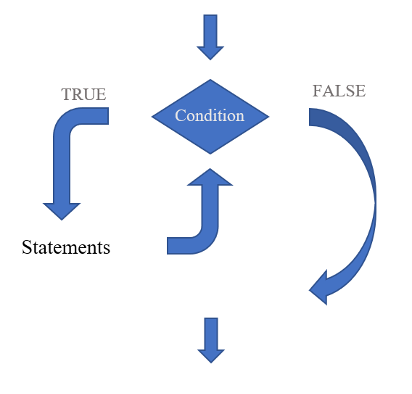
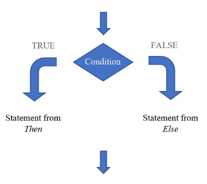

x<-52 Tools for Working With Simulation
Business simulation is a type of computer-based modeling that allows us to experiment and analyze different business scenarios and strategies. Its appeal comes from being a cost-effective way to explore and test business decisions in production, marketing, finance, and operations, among many other.
We will be using R to conduct business simulation. But before we jump into building our simulation models, we’ll need to learn the tools that allow us to perform the analysis. In this module, we introduce the building blocks of computer simulation models.
2.1 Storing Our Data in R
Objects, vectors and data frames are all important in the R programming language. They are useful when storing and manipulating data in R. An object is a piece of data that can be stored in a variable. It can be as simple as a single integer or as informative as the output in regression analysis. The code below creates an object x that stores the number \(5\).
Vectors are one-dimensional arrays of data that can be stored in an object. They can contain elements of various data types, such as numerical values, character, or logical values (i.e., TRUE or FALSE). However, every component of the vector must be the same data type. Below, the vector Books stores the titles of \(5\) monster classics a bookstore plans to release as characters.
books<-c("Frankenstein","Dracula","Moby Dick",
"War Of The Worlds","Beowulf")Lastly, a data frame, is a two-dimensional data table with rows and columns. Each column in a data frame represents a different variable, and each row represents a single observation or record. You can think of a data frame as a collection of vectors that are related to each other. We can easily construct a data frame by combining one or more vectors using the data.frame() function in R.
data.frame(Books=c("Frankenstein","Dracula",
"Moby Dick",
"War Of The Worlds","Beowulf"),
Price=c(9.5,5.78,6.34,5.67,2.45)) Books Price
1 Frankenstein 9.50
2 Dracula 5.78
3 Moby Dick 6.34
4 War Of The Worlds 5.67
5 Beowulf 2.452.2 Generating Random Numbers in R
There are several functions available in R that can be used to generate random numbers. These functions are based on a specific probability distribution. For instance, the rbinom() function generates random numbers based on the binomial distribution, while the rnorm() function generates random numbers based on the normal distribution. By using these functions, we can generate random numbers that follow a specific probability distribution. For example, the binomial distribution may be useful in estimating the probability that a certain number of customers respond to a marketing campaign. However, as we will see below, we can also use the distribution to generate random customers who either responded or not responded to the campaign.
Assume the bookstore is unsure on how many customers will buy their Monster Classic Series at list price. Their plan is to send \(100\) catalogs by mail to potential customers. Before they send the catalogs, they decide to get an estimate on demand. Past data reveals that the probability a customer would buy any of the titles at the given prices is \(0.70\). Let’s modify our data frame by simulating demand with the rbinom() function.
(MS<-data.frame(Books=c("Frankenstein","Dracula",
"Moby Dick",
"War Of The Worlds","Beowulf"),
Price=c(9.5,5.78,6.34,5.67,2.45),
Demand=rbinom(5,100,0.7))) Books Price Demand
1 Frankenstein 9.50 69
2 Dracula 5.78 75
3 Moby Dick 6.34 75
4 War Of The Worlds 5.67 71
5 Beowulf 2.45 75As you can see, the rbinom() function has yielded \(5\) simulated outcomes from the binomial experiment with a probability of \(0.7\). With these demands the bookstore can prepare for different demand scenarios as well as assessing the profitability of the Monster Series.
2.3 Using Loops and Conditional in R
Loops and conditionals are extremely useful when creating our simulation models. Among the many benefits, they will allow us to easily generate new variables for our model, or test different variations of our parameters to see how the model behaves.
Loops and conditionals are two important control structures in the R programming language that allow you to execute specific blocks of code based on certain conditions.
A loop is a programming construct that allows you to repeat a block of code a specified number of times or until a certain condition is met. There are several types of loops in R, including for loops, which execute a block of code for a fixed number of iterations, and while loops, which execute a block of code as long as a certain condition is true. Below you can see the structure of the while loop.

Conditionals allow you to execute different blocks of code based on whether a certain condition is true or false. The most common type of conditional in R is the if-else statement, which executes one block of code if a condition is true and a different block of code if the condition is false. Below is the structure of the conditional statement.

Let’s go back to the Monster Classic example and assume that the bookstore has gained additional insight on the demand of their collection. In particular, assume that if the book is either Frankenstein or Dracula, the probability of a customer buying it is \(0.9\) (the probability of the other books remains at \(0.7\)). We can now modify our demand simulation using a loop and a conditional.
demand<-c()
for (i in MS$Books){
if (i=="Frankenstein"| i=="Dracula"){
p=0.9
}
else {p=0.7}
demand<-c(demand,rbinom(1,100,p))
}
print(demand)[1] 91 92 60 73 66In the code above, the inner conditional checks whether the titles are either Frankenstein or Dracula. If so, then the random binomial number is drawn with the probability \(0.9\), if not the it is drawn with probability \(0.7\). The for loop, goes through all the books in the series one by one and adds a simulated demand. You can quickly realize that this becomes very efficient if the bookstore has a very large collection of books. Below is our data frame with the new simulated values.
(MS<-data.frame(Books=c("Frankenstein","Dracula",
"Moby Dick",
"War Of The Worlds","Beowulf"),
Price=c(9.5,5.78,6.34,5.67,2.45),
Demand=demand)) Books Price Demand
1 Frankenstein 9.50 91
2 Dracula 5.78 92
3 Moby Dick 6.34 60
4 War Of The Worlds 5.67 73
5 Beowulf 2.45 662.4 The VA Deaprtment of Transportation Wants Your Services
The VA ferry crossing the James River was first established in \(1925\). The ferry transports vehicles back and forth from Jamestown to Scotland in a \(15\)-minute ride. The VA Department of Transportation wants you to simulate the daily demand for the ferry so that they schedule the expected staff and number of ferries to run.
Assume that the VA Department of transportation shares three weeks of data:
| Day | Week 1 | Week 2 | Week 4 |
|---|---|---|---|
| Mon | 1175 | 1020 | 1163 |
| Tue | 1198 | 1048 | 1066 |
| Wed | 1189 | 1102 | 1183 |
| Thu | 1175 | 1094 | 1003 |
| Fri | 1101 | 1042 | 1095 |
| Sat | 1529 | 1464 | 1418 |
| Sun | 1580 | 1534 | 1512 |
What distribution would you use to simulate weekdays (Mon-Fri)? Would you simulate weekends (Sat and Sun) differently than weekdays? According to the data, what would be the minimum and maximum number of vehicles transported during weekdays (weekends)? Can you provide a sensible simulation for week 4?
2.5 Lessons Learned In This Chapter
Generating Random Numbers with R functions.
Using Loops and Conditionals.
Understanding objects, vectors, and data frames.
2.6 Readings
These reading will help you review the concepts and theory necessary for completing this module. Grolemund (2014) reviews the R basics needed to perform computer simulation, while Gelves (2022) reviews the probability concepts necessary to understand the different random number generators.
Grolemund (2014) Chapter 1 (The Very Basics), Chapter 3 (R Objects), Chapter 7.2, 7.3 (Conditional Statements), Chapter 9.3, 9.4, 9.5 (Loops).
Gelves (2022) Chapter 10 (Discrete Random Variables), Chapter 11 (Continuous Random Variables).
Winston (2019) Chapter 10.1 and 10.2. Pay special attention to the probability distributions and try to replicate the examples in R.